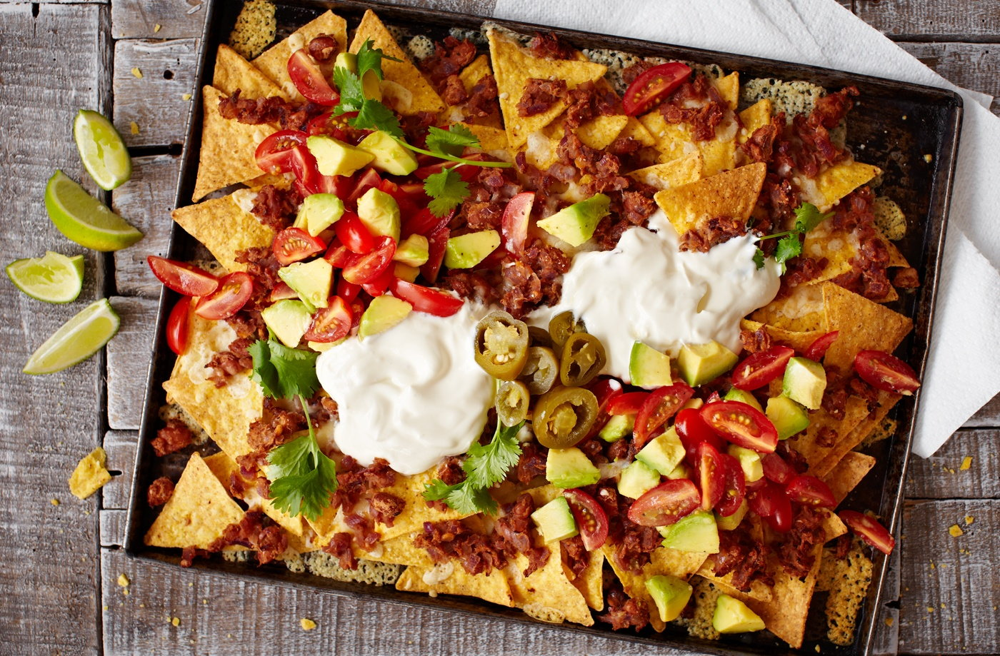

The most mexican nachos

Ingridient list
- 2 x 200g bags lightly salted tortilla chips
- 150g (5oz) mature Cheddar, grated
- 100ml (3 1/2oz) soured cream
- 25g jalapeno peppers, chopped
- handful fresh coriander leaves
- 2 tsp olive oil, plus extra for greasing
- 2 red onions, finely chopped
- 2 x 390g tinned pinto beans, drained and rinsed
- 2 tsp ground cumin
- 2 tsp Ingredients Mexican Tinga Paste
- 1 x 200g pack baby plum tomatoes, quartered
- 1 ripe avocado, diced
- 1 lime, juiced
Instructions
- Preheat the oven to gas 6, 200°C, fan 180°C. Grease and line a baking tray with nonstick baking paper. For the refried beans, heat the oil in a medium-sized pan set over a medium heat. Add the onion and cook for 5 minutes, or until softened. Add the garlic and cook for 1 minute more.
- Add the pinto beans, cumin and the tinga paste, mashing the beans with the back of a spoon. Reduce the heat and cook for 15 minutes.
- Meanwhile, in a bowl, combine the tomatoes, avocado and lime juice for the salsa. Season well and set aside, until needed.
- Spread the tortilla chips out on the prepared tray and scatter over half the cheese. Top with the refried beans, and then scatter over the remaining cheese. Bake for 10 minutes, or until cheese has melted.
- Serve the hot nachos immediately with the salsa, soured cream, jalapenos and coriander sprigs.